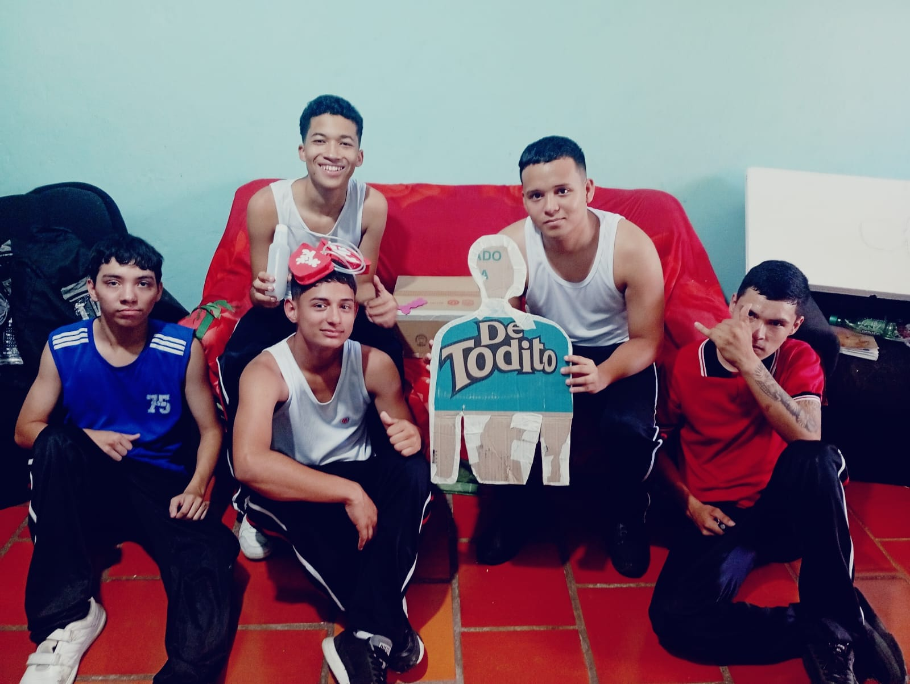
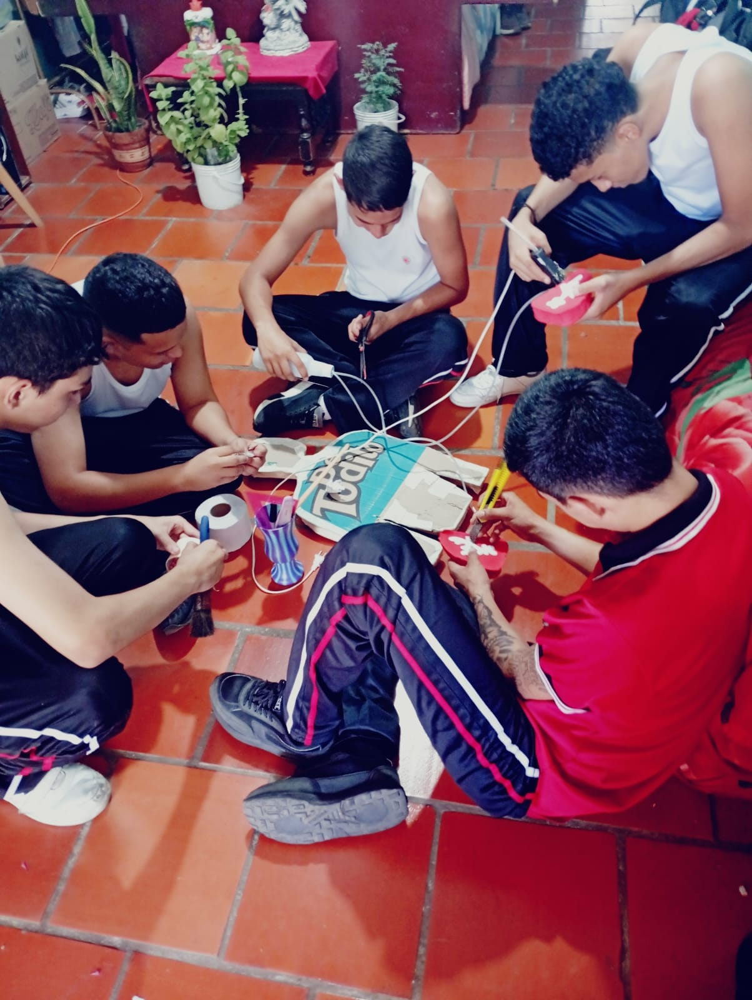

1. ¿Qué es el Sistema Pulmonar?
El sistema pulmonar es el encargado de llevar oxígeno a todo el cuerpo y eliminar el dióxido de carbono. Es el mecanismo vital que nos permite respirar diariamente.
Forma parte del sistema respiratorio junto con las vías respiratorias superiores e inferiores.
2. Órganos Principales
| Órgano | Función Principal |
|---|---|
| Nariz y boca | Filtran, calientan y humedecen el aire al ingresar. |
| Tráquea | Tubo resistente que transporta el aire directo a los pulmones. |
| Bronquios | Se ramifican desde la tráquea hacia cada uno de los pulmones. |
| Bronquiolos | Conductos más pequeños y finos dentro de la estructura pulmonar. |
| Alvéolos | Pequeñas bolsitas donde ocurre el intercambio de gases (O₂ y CO₂). |
| Pulmones | 2 órganos esponjosos. El derecho tiene 3 lóbulos y el izquierdo 2. |
| Diafragma | Músculo principal que ayuda a inflar y desinflar los pulmones. |
3. ¿Cómo Funciona? (4 Pasos)
Inspiración
El diafragma baja y entra aire rico en oxígeno por la nariz o la boca.
Transporte
El aire viaja: tráquea > bronquios > bronquiolos > alvéolos.
Intercambio gaseoso
En los alvéolos la sangre toma el oxígeno (O₂) y libera el dióxido de carbono (CO₂).
Espiración
El diafragma sube y expulsamos el aire cargado de dióxido de carbono.
4. Datos Curiosos
Tenemos aproximadamente 300 millones de alvéolos en los pulmones.
Respiraciones por minuto en estado de reposo habitual.
El pulmón derecho es más grande; el izquierdo le da espacio al corazón.
La superficie total de los alvéolos equivale al tamaño de una cancha de tenis.
5. Enfermedades Comunes
Dificultad para respirar debido a la inflamación de los bronquios.
Infección inflamatoria que afecta a las bolsitas de aire (alvéolos).
Inflamación e irritación del revestimiento de los conductos bronquiales.
Daño progresivo a los pulmones, muy común en personas fumadoras.
Equipo y Participación
A continuación se muestran fotos de los integrantes y el proceso de trabajo. Reemplace las imágenes en la carpeta images/ según correspondan: proceso 1.jpg y proceso 2.jpg, además de las fotos individuales listadas en cada perfil.
Jhonni Colina
- Nacimiento: 2 de Abril del 2009
- Lugar: Punto Fijo, Estado Falcón, Venezuela
- Hobbies: Jugar fútbol
Mateo Valero
- Nacimiento: 23 de Noviembre de 2010
- Lugar: San Cristóbal, Táchira, Venezuela
- Hobbies: Jugar fútbol, jugar videojuegos
Santiago Navarro
- Nacimiento: 30 de septiembre del 2009
- Lugar: Cúcuta, Norte de Santander, Colombia
- Hobbies: Jugar fútbol, andar en bicicleta
Johan Bermont
- Nacimiento: 9 de agosto de 2010
- Lugar: Cúcuta, Norte de Santander, Colombia
- Hobbies: Jugar fútbol, jugar videojuegos
Santiago Galindo
- Nacimiento: 2 de enero de 2010
- Lugar: Tucacas, Falcón, Venezuela
- Hobbies: Jugar fútbol, dibujar, escuchar música, jugar videojuegos, comer


6. ¿Cómo Cuidar Tu Sistema Pulmonar?
-
No fumar: Evita el tabaco y el humo de segunda mano.
-
Hacer ejercicio regular: Fortalece la capacidad pulmonar y diafragmática.
-
Evitar la contaminación y el polvo: Protege tus vías respiratorias.
-
Respiraciones profundas: Practica ejercicios de respiración consciente.